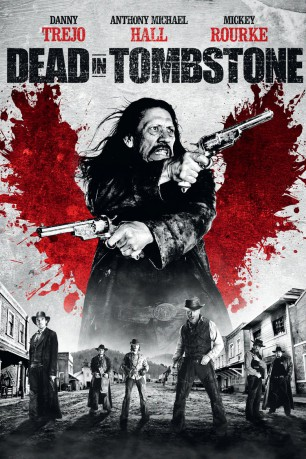

#3111 Dead in Tombstone
 
 IMDB-Wertung: 4.9 / 10
IMDB-Wertung: 4.9 / 10  Metascore: 0
Metascore: 0 
Dem gesetzlosen Bandenführer Guerrero Hernandez gelingt es, seinen Halbbruder Red aus dem Gefängnis zu befreien. Guerrero will gemeinsam mit Red eine Bergarbeitersiedlung plündern. Doch der Plan misslingt, denn Red hintergeht seinen Halbbruder und tötet ihn. Durch einen Pakt mit dem Teufel kann der Outlaw Guerrero von den Toten auferstehen und in die kleine Western-Stadt Tombstone zurückkehren. Dort richtet er auf den staubigen Straßen ein Blutbad an. They fucked with the wrong zombie!
Jahr: 2013
Dauer: 99 Minuten
FSK: 16
Land: USA Studio: Universal Studios Home EntertainmentTonspuren: DTS - ,
Untertitel: Deutsch,
Auflösung: 1080p (1920x1080) Größe: 8028 MB
Genre: Action, Horror, Fantasy, Western
Regisseur: Roel Reiné
Drehbuch: Brendan Cowles, Shane Kuhn
Soundtrack: Hybrid
Darsteller:
 Danny Trejo als Guerrero
Danny Trejo als Guerrero Mickey Rourke als Blacksmith
Mickey Rourke als Blacksmith Anthony Michael Hall als Red Cavanaugh
Anthony Michael Hall als Red Cavanaugh Dina Meyer als Calathea Massey
Dina Meyer als Calathea Massey Richard Dillane als Jack Sutter
Richard Dillane als Jack Sutter- Colin Mace als Judah Clark
 Emil Hostina als Baptiste
Emil Hostina als Baptiste- Ovidiu Niculescu als Darko
 Ronan Summers als Ramos
Ronan Summers als Ramos- Edward Akrout als Snake
- Radu Andrei Micu als Washington
 Daniel Lapaine als Sheriff Bob Massey
Daniel Lapaine als Sheriff Bob Massey George Remes als Deputy Tom Morris
George Remes als Deputy Tom Morris- Claudiu Trandafir als Preacher
- Radu Iacoban als Duke
- Mike Elliott als Mine Guard #2
- Sandy Romero als Saloon Girl , uncredited
- James Carroll Jordan als Father Paul
- Ioan Cortea als Deputy Cade Hudson
- Tomi Cristin als Bartender
- Dan Badarau als Cole Veteran Guard
- Corneliu Ulici als Rip Young Guard
- Daniel Pisica als Rio
- Catalina Grama als Liza
- Miriam Rizea als Vera
- Constantin Barbulescu als Mine Guard #1
- Ioan Ionescu als Judah's Marshal #1
- Razvan Oprea als Bank Deputy #1
- Marius Capota als Bank Deputy #2
- Ornella Boulé als Snake's Girl , uncredited
Datei: X:\HD-Western-Collections\Dead in Tombstone\Dead in Tombstone (2013, FSK16, 1920x1080).mkv seit 28.01.2016
Festplatte: HD Eastern+Western
 Alle Filme aus Gruppe 'HD-Western-Collections\Dead in Tombstone'
Alle Filme aus Gruppe 'HD-Western-Collections\Dead in Tombstone'